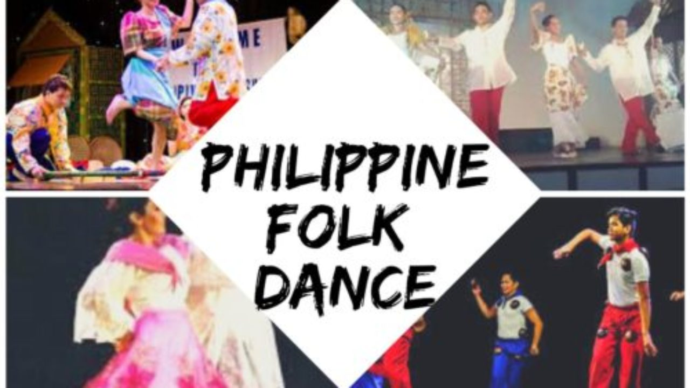

IT-212 GROUP 6
STI College Las Piñas
This website is created for the purpose of gathering research information from the respondents.
The objectives is to know if there is a difference in Most Famous Folk Dance in Luzon, Visayas, and Mindanao in terms of complexity of executing the steps
The researchers created a part of website where the respondents can answer the questionnaire survey prepared.
The identities of the respondents will be kept as a secret by the researchers.
If there are concerns feel free to email us at alysoncalimag@gmail.com